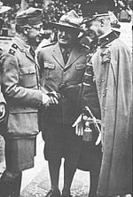

A cserkészet élén
===

1922. június 10-ével Horthy Miklós kormányzó Teleki Pált nevezte ki az ország főcserkészévé. Népszerű és nagy hatású szereplője az ifjúsági mozgalom történetének. Teleki azonban nem viselte hosszú ideig a címet, ugyanis 1923 márciusában egészségi állapotára hivatkozva benyújtotta lemondását, és főcserkészi tisztsége alól a kormányzó felmentette, és tiszteletbeli főcserkésszé nevezte ki. E szerepében volt az 1933-as cserkész világtalálkozó (Jamboree) szervezője és irányítója: Gödöllőn, a Királyi Kastély parkjában a világ számos országából érkező 30.000 cserkész táborozott.